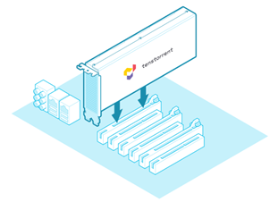
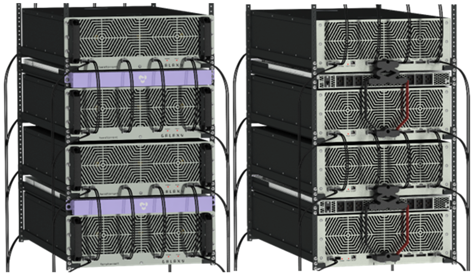

Home
Tenstorrent produces add-in boards, system solutions, APIs, IP, and more featuring our Tensix Core and RISC-V architectures to accelerate machine learning and AI workloads. Our documentation for those technologies is available here.
Add-In Boards and Cooling Kits
Documentation and support for Tenstorrent add-in boards and the Active Cooling Kit:

Documentation and support for Tenstorrent add-in boards and the Active Cooling Kit:
Workstations and Server Systems
Physical and software setup for Tenstorrent workstation and server solutions:

APIs, SDKs, and Software
TT-Buda
Documentation for Tenstorrent’s high level API is here.
TT-Metalium
Documentation for Tenstorrent’s open source, low level API is here.
Software and Utilities
Documentation and downloads for drivers, software, and utilities to manage Tenstorrent hardware is here.
Support
For support, forums, and community, visit Tenstorrent’s Discord channel.
For additional support, you can contact us directly at support@tenstorrent.com.